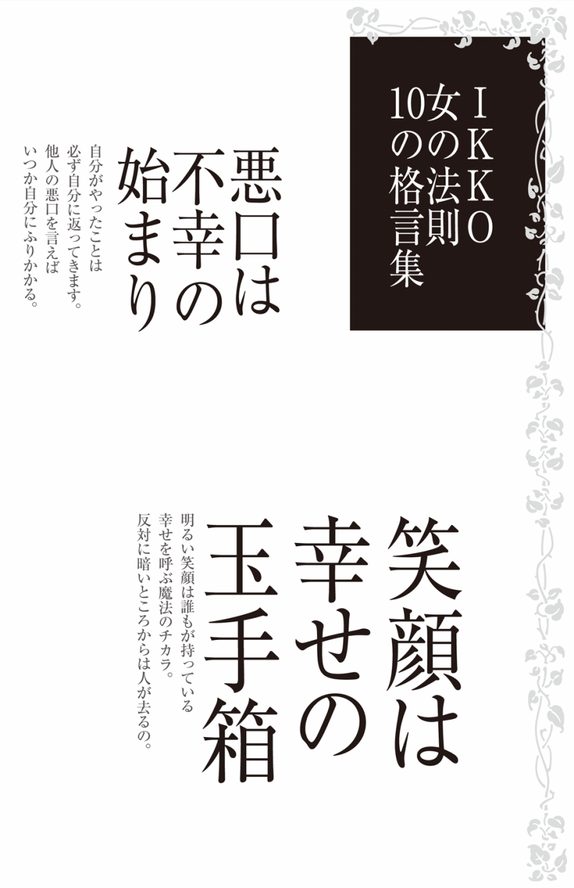
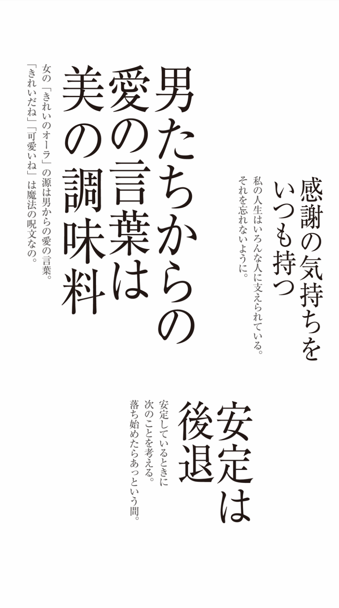
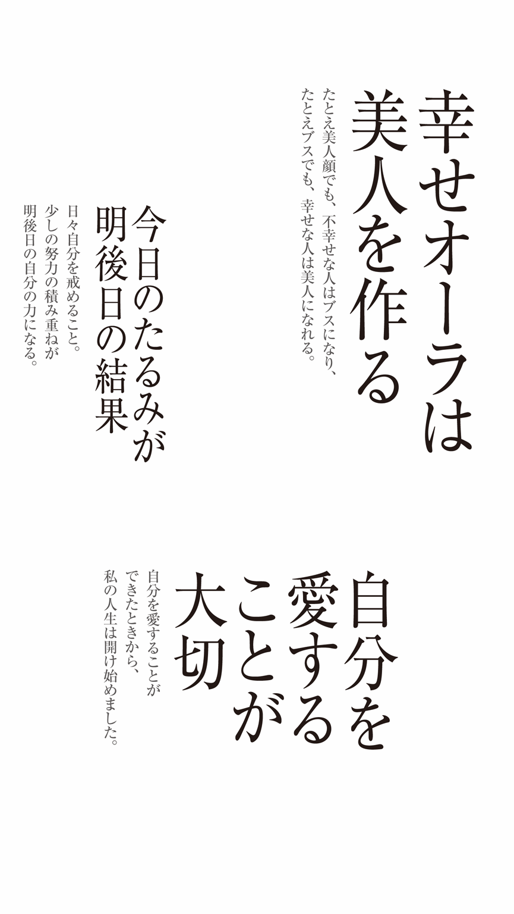
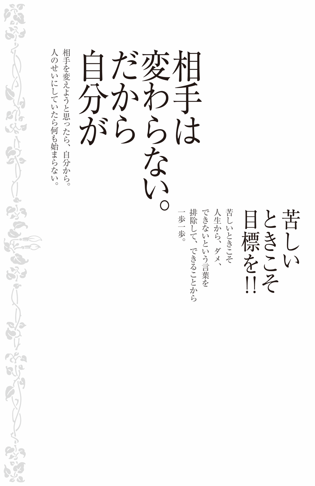

| IKKO女の法則 幸運を引き寄せるココロとオンナの磨き方 | |
| IKKO | |
| (2007) | |
I K K O
女の法則
幸運を引き寄せるココロとオンナの磨き方
この本は縦書きでレイアウトされています。また、ご覧になる機種により、表示の差が認められることがあります。
丸暗記だった私の人生......
「あなたのこれまでの人生の常識を、今日この日から捨てなさい」
19 歳で美容室に就職したその日に恩師・澤飯先生の奥様からそう言われました。そのときは何のことかさっぱり分からず何か注意されると「でも......」「だって......」という言葉が今思えば多かったのかもしれません。
例えばブローのアシスタントのとき、仕上がりは同じ髪形に見えるのに先輩たちからは水で濡らしてやり直され、その深い訳を考えもせずそれを「いじめられている」と思っていた私がいたような気がします。
30 歳で独立し、責任という２文字、ＭＵＳＴ（〜でなくてはならない）ということを考えて仕事するようになり、初めて分かったんです。
自分の思い込みがあるうちは新しいことを吸収できないんだと。
「でも」「だって」という反発は、自分の思い込みやエゴがあるから出てしまう言葉。
もっと早く恩師の教えを理解できていれば、遠回りしなくてすんだかもしれないのに、それに気付かなかったのはそれまでの私が「丸暗記の人生」だったから。
小学校で勉強の仕方が分からずについていけなくて、中学校では、ひたすら丸暗記でテストをしのいできた丸暗記人生で、まったく応用がきかない人間にできあがっていたのでしょう。
だから物事には意味があるということを分かっていなかった。
どんなに努力してもひとりよがりでは実を結ばないものです。
そのときそのとき、人から言われたことを素直に理解しようとする心が大切なんですネ。
45 歳になって、肩の力を抜くことも少しずつ覚え、メイクに関しても、人生に関しても、自分の中でようやくいろんなことがおもしろくなってきています。
要領が悪くて不器用で、女に生まれたかったのに男に生まれてしまったそんなコンプレックスだらけの人生でひとつひとつ乗り越えるにも人一倍時間がかかりましたけど、生きていくためにそれが必要だったから苦労とは思いませんでした。
コンプレックスがあったから今の私がいると思うことができています。
「生まれ変わるなら女として生まれたい」
そう思っていた気持ちも最近は違います。
「今度生まれてくるときも、ＩＫＫＯのままでいい」
と心の底からようやく思えるようになってまいりました。
私がそう思えるまでの軌跡を一冊にまとめた『ＩＫＫＯ女の法則』。
恋愛に仕事、体のこと、苦悩しながらも私なりに得てきた生きるヒントを、ひとりでも多くの方に読んでいただき、参考になればうれしいなと思っております。
そして、読み終わったすべての方に美しく幸せな人生が訪れることを心より願っております。
愛を込めて ＩＫＫＯ
第１章 素敵な恋愛ができるきれいの法則
恋する力は女をきれいにする。
そして、ひとつの恋が終わったときにまた一歩、いい女へと近づける。
だから、今日も誰かにときめいていたい
恋愛はせつないもの。でもそのときこそ女がきれいになれるチャンス
直感的にビビッと感じる男性に出会った経験、みなさんはありますか？ 私はかつてそういう男性と何度か巡り合ったことがありました。中でも印象に残っているのは、パーティー会場で出会ったある彼のこと。彼の顔を見た瞬間「この人かもしれない」そう感じた私はすぐに電話番号を聞き、３日後には食事へ！ なんて展開に。
でもダメだった。当時の私の目は、欲望丸出しの「獲物を狙うガッツいた目」をしていたのよね。何がなんでも彼を手に入れようと、全身でぶつかりすぎていたんです。
そんな女だと男の気持ちはつかめない、というのは今なら分かりますが、そのときはそれが分からなかったんですね。もう一度会いたい、もう一度会いたいという、切に願う私の気持ちとのギャップに彼は引いていってしまったの。
そのとき初めて、愛情の押しつけは男にとっては煙たいものだということを、身をもって知りました。
それでも彼に会いたい気持ちで胸がはちきれそうだった私は、１週間も２週間も３週間もかかってこない電話を待って、死にそうなくらいに苦しいときを過ごしたものでした。
でもね、あるとき見切りをつけたの。どんなに好きになっても、さんざん苦しい思いをしても振り向いてくれない彼。報われることなく、せつなさは増すばかり。そんな彼にこれ以上エネルギーを使ってもきっと無駄だわ......。そう割り切り、思いを断ちました。その代わりにもっと自分を磨いて素敵になって彼を見返そう......。
人生っておもしろいもので、そう思ったときから仕事もプライベートもうまくいくようになりました。彼を見返すために決意した自分磨きでしたが、その意欲がすべてのことに対してのパワーにつながったのでしょう。それもあの彼へのつらい思いがあったからと、今では感謝しています。
恋愛って悲しくてせつないもの。でもね、そういう経験があってこそ、女の深みは増すものです。だから失恋しても落ち込まず、そのときが女が一番きれいになれるチャンスだと思って励みにすれば、必ず結果として返ってきます。
幸せな恋愛もせつない恋愛も、女にとっては大事なエッセンス。
みなさんも、たくさん恋をしてせつなさを味わって、もっともっといい女になりましょうね。
いい女と普通の女の違い。それは自分自身を、３６０度見る視線を持っているかどうか
素人と女優さんの違いってなんだと思いますか？
私はテレビに出させていただくようになった当初、女優さんや俳優さん、タレントさんのあまりの美しさに毎回ため息をついていました。彼女たちの美しさの秘密はいったいどこにあるのだろう。一緒に番組に出させていただく以上、私もがんばらなくちゃ。そう一念発起して減量とシェイプアップを始めた頃に、あるひとつの答えが出たんです。
女優さんたちは正面はもちろんのこと、背中、横、斜め、お腹、お尻と、あらゆる角度に自分の視線をあてているんです。常にいろんなアングルからの視線を感じて、それに応えるために目を配っているから、体全体に自然と緊張感が生まれているんですよね。
人間の体って緊張感を持っている部位は、常に筋肉が動くため、それだけでも太りにくくなるものなんですよ。
たいていの人は正面からの自分しか見てない。唯一ある視線が正面だけだから、緊張感がなく、だらしのない体になってしまうのだと思います。
これからは、ときどき自分の体を意識してみてください。つい背中が丸まっていたり、足がだらしなく開いていたりしたら、その部分の緊張感はまるでなし。要は筋肉にもまったく力が入っていない状態だということに気づくはずです。
例えばショーウィンドウを通り過ぎるときに、さり気なく自分の体をチェックしたり、部屋の中の鏡を増やすのもいい心がけですね。
このことは体だけではなく、顔の表情にも同じことが言えます。横からも後ろからも常に視線を感じていると、いろんな角度から自分の顔がどう見られているかを意識するので、緊張感のある、人を引きつけるような良い表情が生まれます。
私も体型、姿勢、表情にいつも緊張感を持つこと がいい女には欠かせないことだと気づいた頃から、女優さんたちのきれいの秘訣を取り入れて、毎日の全身チェック、鏡を見ながら表情の研究を欠かしません。もちろんまだまだシェイプアップの必要がありますから、そんな女優さんたちを目標に、少しでもきれいになろうと日々がんばっている最中です。
ほんの少し意識するだけで今よりもきれいになれる「３６０度の法則」、みなさんもぜひ試してみてください。
自分で自分を愛してあげる。そうしないと人からは愛されない
今、日本では簡単に整形をする人が増えています。
確かに外見のコンプレックスは、他人には分からない苦しみを本人に与えます。だから整形することで、少しでもその苦しみから解放されるのなら、それもひとつの手段ですよね。
でも、その前にちょっと考えてみてください。
整形だけに頼るのではなく、心を磨いたり、表情を豊かにすることでも、外見の印象はずいぶんと変わるものなんですよ。だって、せっかく整形をしても、笑顔を忘れたままではきれいになったとは言えませんよね。
私は自分がきれいじゃないと自覚しているけれど、整形しようと考えたことはありません。自分自身については「ブスはブスで、仕方がないじゃない」そう思っているから。その代わりにシェイプアップをしたり、鏡を見て表情を研究したりして、誰よりもきれいになる努力をしています。
自分はきれいじゃないって自覚はしていても、開き直って「どうせ私はブスだから」とあきらめてしまったり自分を卑下してしまったら、容姿だけではなく性格もブスになってしまう。そうしたら、ますます誰からも愛されなくなってしまうでしょ。
だからこそ、まずは自分で自分のことを可愛がってあげなくちゃ。
もう一つ、年を取れば取るほどに、人間、中身が重要になってくるもの。人は経験とともに表面的な可愛さだけではなく、内面の豊かさが表情に出てくるものだと私は思います。
その証拠に、見た目は決して可愛いとは言えないのになぜかもてる人、あなたの周りにもいるのではないでしょうか。そんな人たちに共通しているのは、明るさだったり、笑顔だったり、性格の可愛さだったりするはずです。
そういう人の笑顔は、思わずこちらもニコッとしてしまうくらい素敵なものです。人は豊かな表情があってこそ、容姿が生かされるもの だと思いますね。
大切なのは自分の良いところを見つけて、笑顔を磨き、いろいろな経験を重ねて心を豊かにすること。そうすればきっと今よりもっと、魅力的な女性になれるんじゃないかしら。
めいっぱい自分で自分を愛してあげれば、必ず心も体もそれに応えてくれるはず。そして周囲の人もそんなあなたから幸せオーラを感じ、女としても人としても愛してくれるはずですよ。
美は一日にして成らず。「きれいのオーラ」は日々の努力で身につくもの
今を感じさせる女の人は、いつも新鮮な「きれいのオーラ」を出していると思いませんか。
流行のものを身につけていることだけが今っぽい女の子とは限りません。仕草だったり表情だったり、そうしたすべてのことがミックスされて、初めて今っぽい女の子になれるものだと思います。
自己流のファッションをしていても、どこかに今っぽさを取り入れているのとそうでないのとでは、大分印象も異なります。単なる野暮な女にならないためにも、「何が今っぽいオーラなのか」を研究してみてください。
私が実践しているのは、雑誌や新聞などのメディア情報に目を通すこと。ゆっくりとチェックしている時間がないので、仕事で週に何度か乗る飛行機の中が私のリサーチタイムなの。そこで大量の雑誌や新聞に目を通します。そして何となく引っかかった言葉や画像を覚えておくようにしています。
雑誌記事のタイトルや広告のキャッチというのは必要なキーワードが凝縮されているので、本文をすべて読まなくても、それを拾うだけで時代の流れを感じることができるのです。そうして感じ取ったものが、私のヘアメイクの作品に反映されているんですよ。
ただパラパラと雑誌をめくるのではなく、目線を変えてキーワードを拾う気持ちで見てみて。何が今っぽいオーラなのかが自然と見えてくるはずです。
それから何が「きれいのオーラ」かを研究することが大切ですね。それは何かと言うと昔も今も変わらない普遍のオーラ。仕草や目線など、素敵だなって思える人がいたら、その人の真似をすることから始めてもいいわね。
若い頃から私も、素敵だなって思える女優さんの立ち居振る舞いを真似したり、女優魂をいただくために自宅の玄関に写真を飾ったりしています。仕事に出かけるときに、イングリッド・バーグマンの姿を一瞬目にするだけでも、改めて気合いが入るものなんです。
ただ、ちょっと間違うと単なる芝居がかった女になってしまうから気をつけて。「あなたのすべてが芝居じみているわね」なんて言われちゃったら嫌ですものね。
常に、今何が素敵なのかをキャッチすることを習慣にすれば、 今っぽい雰囲気を持つ、洗練された「きれいのオーラ」が出せるように、あなたもきっとできるはずよ。
玄関や寝室などに写真を飾っておけば、必然的に目に入ります。憧れのプロポーションの女優さんの写真を飾って、シェイプアップの励みにするなんていうのもいいですね。
ジーン・ハーローやイングリッド・バーグマンなど、私が憧れている女優さんの写真を玄関に飾っています。毎日出かけるときに見ては、女優魂をいただいているんです。
トキメキが終わったとき＝恋愛の終わりではない。もっと大事なものの誕生のとき
出会った頃のトキメキを永遠に持ち続けることは難しい。ましてや付き合いが長くなればなるほど、いつしかトキメキが薄れていくのは仕方のないことです。
でも、トキメキがなくなってしまったからといって、その恋愛が終わったとは思いません。トキメキのあとには「信頼」や「絆 」といった、もっと深い、もっと愛に満ちたものが生まれる のだと思います。
私には10 年以上前からお付き合いをしている彼がいます。お互いに仕事をしているし、忙しくて、最近ではゆっくりとデートもしていません。トキメキも以前に比べると感じなくなっています。それでも声を大にして言えます。「誰よりも大切な人」だと。
私が苦しいときにいつでも側 にいてくれたのが彼でした。30 代で病気をして倒れたときも、目を覚ました私の側に、家族と同じ目で見守る彼の姿がありました。そのときに確信したんです。「この人しかいない」と。
私も彼と同じように、もしも彼に大変なことが起これば、全身全霊で守るつもり。お互いに運命を分かち合える、彼は私の大事な大事な心のパートナーなんです。
軽井沢に、時折訪れる「星のや」という私のお気に入りの宿があります。私は仕事で疲れた心と体を癒しに行くのですが、窓辺からの景色をひとり眺めているときにふと思うのです。「彼とここに来たいな」と。
他の誰でもなく、彼と一緒に来たいのです。彼とだったら気兼ねもせず、ゆったりとした気持ちのまま、ほんのひと時の休暇を過ごせるから。素 の私を見ていてくれる人だから。
どんなに状況が変わっても、時代が変わっても、私たちは、そのときそのときのお互いの素を受け止められる相手なんです。
女にとってトキメキは「きれいのエッセンス」だと思います。だから恋人がいても、他の人に心が揺れるのは、女であり続けるために決していけないことではないと思います。
けれども人生の中で大切に思えるパートナーと巡り合うこと、またその存在に気づくことは、これに勝る幸せはないことだと心から感じています。
トキメキが日々の幸せなら、どんなときも自分の味方でいてくれるパートナーは人生の幸せ。恋愛を超えて生まれる大事なものをあなたもどうぞ大切にしてください。
美人にはなれなくても...女なら誰でも可愛くなれる７つの法則
その１ 磨かれた玄関から輝く運気を取り入れる
女の人が特に気をつけなくてはいけないのは玄関です。風水でも玄関は良い気も悪い気も出入りする大事な場所だそうです。私は以前から「玄関はそこに住む人の顔」 だと思い、常にピカピカに磨いています。
それに、きれいな玄関なら気持ち良く一日がスタートできるし、疲れて帰ってきても、磨かれた玄関に気分が安らぎ、リセットできるんですよね。
私はまず、靴を脱いだらすぐに下駄箱にしまい、玄関にはいっさい靴を置きません。泥がついたり雨で濡れているなんてもってのほか。雨の日は乾いたタオルを用意しておいて、脱いだ側 から即、お掃除。玄関にお布団を敷いて寝られるくらい、徹底的にきれいをキープするように心がけています。
だって玄関が汚れているということは、顔が汚れているのと同じこと。汚れた顔で人には会えないですものね。
一日の始めと終わりを過ごす家は、きれいが作り出される大事な空間。まずは玄関からきれいにすることが、いい女になるための絶対条件ですね。
外出から帰ったら、磨かれた玄関にはきれいな花がいっぱい。なんていうのも一日の疲れが癒されそうよね。
中だけでなく、玄関の外にも南国を感じさせる植物をいつも飾っているのよ。家全体をきれいな花で飾ると、それだけで良い気が入ってきそうな気がしませんか。
その２ 「きれいだね、可愛いね」は魔法の言葉
仕事が忙しいと、ついつい自分にかまわなくなりがちに。その結果、たどり着く先はオヤジ化した女。
私自身もヘアメイクとして裏方に徹していた頃はそうでした。女優さんや歌手の側にいるから風邪なんか引けないし、朝から晩まで続く仕事のときには、食べなくては体力が持ちません。そのため「自分がきれいになる」ことになど頭も気持ちも回らなかったものです。
でもね、体調を整えるためにシェイプアップを始めた頃から、仕事も女らしさも同時進行できる んじゃないかしら......そう思うようになりました。
減量の成果が出始めると、周囲から「きれいになったね」という言葉をかけられるようになり、それが励みにもなって、もっともっときれいになろうという気持ちがわいてきました。ハードな仕事が続き、ついつい食べすぎちゃっても、「仕方がない」ではなく、「じゃあいつもよりも歩こう」と、どこかで仕事と女らしさのバランスを取るようになったのです。
「きれいだね、可愛いね」は女がもっときれいになりたい気持ちを高めてくれる魔法の言葉なんです。
その３ 自分は可愛いと自己暗示をかける
自分で自分をほめてあげることって大切だと思います。だって自分で自分のことを「ブスだわ」「性格悪いわ」なんて思っていたら、ますますブスな女になってしまうでしょ。自分のことを可愛い、そう思って自己暗示をかけることで、卑屈な顔になったり不幸せなマイナスオーラを出すこともなくなるはずよ。
私も自分で自分のことを可愛いと思って自己暗示をかけています。それに体型維持にも自己暗示を活用 しているんです。
例えば朝のウォーキング。仕事で疲れているときは正直怠 けたい、わざわざ朝早く起きないで寝ていたい、ゆっくりしていたい、そう思うこともあります。でもそこで怠けたらみるみる太って、怠 惰 な女になってしまうわ。だからこう言い聞かせるの。「ダメ、いいの？太っても！」。落ちていくのはあっという間。だから努力し続けなくちゃいけない、そう自分の胸に言い聞かせているんです。
自己暗示をかける。これは仕事でもなんでも共通して大事なことです。ただし自分に甘い暗示は自堕落するだけだから絶対にダメ。努力の後押しをしてくれる効果的な自己暗示を、みなさんも上手に活用してみては？
肌着やタオルなど肌に触れるものって、気持ち良さが直接心に響きますよね。だからこそ、私は上質な素材にこだわっています。幸せな気分を味わうための演出も、自己暗示のひとつ。
お気に入りのカラカラのバスローブ。世界中からセレクトしたタオルやバスローブは見た目も鮮やか、肌触りも抜群。ギフトにも最適。
その４ サラブレッドな男で運気もアップ
生まれたときからＤＮＡがサラブレッドな男性とは、会っているだけで運が良くなっていくような気がしませんか？ そういう男性に巡り合うと、たとえ恋愛が成就しなくても良い刺激を受けます。彼に振り向いてもらうために努力し、ときには見返すために自分磨きをする。そのすべてが人としても女としても成長させてくれるのだと思います。
サラブレッドな男性は、たいていきちんとしたマナーを身につけているものです。それを私は真似するようにしています。
例えば高級フレンチに一緒に行ったとするでしょ。私は彼が食事を始めるまでは手をつけず、彼のテーブルマナーに従っていただくようにしています。そうすれば相手が恥をかくこともないし、こちらもスマートなマナーを身につけることができて一石二鳥。
一流の人に接していることで、自分も徐々にそのレベルになっていくもの です。これは物でも同じですね。一流のブランドや宝石をがんばって身につけることで、だんだんとそれらをさり気なく持てる自分になれるもの。人でも物でも一流と出会って目を肥やし、ステップアップのチャンスにしましょう。
その５ 女は表情で勝負！ 印象に残る表情を研究する
自分と同じくらいのランクの子が集まる合コンはあせるわよね。だって顔で勝負しても同レベルなんだから、その他で勝負しなくちゃいけない。そんなドングリの背比べの合コンは、表情で勝負よ。
それには男たちが可愛いって思えるような表情が一番。
笑顔だったり、ふと見せる女らしさだったり。男たちがぐっとくる表情を研究してみて。
でもそういう表情はときどき見せるからこそ効果がある もの。ずっとそんな表情をし続けていたら、いざというときに印象に残らないから気をつけてよ。
それから、こちらを見てほしいから、かまってほしいからといって、尽くしまくってアピールするのは逆効果。これだけ愛して尽くしているのだから、あなたからの愛も欲しいというのが本心なんだと思うんです。でもそれは女の一方的な愛情の押し付け。そんな本能丸出しの女は男に引かれてしまいます。
自分が彼に何をしたいかではなく、彼が今何を欲しているかを感じ取り、さり気なくそれをしてあげることができるかどうか。それが相手に好印象を与えるキーポイントなのです。
その６ せつなさのタイミングを知る
せつなさってミステリアスよね。この人なんなんだろう、もっと知りたい、近づきたいって思わせるから。それにどこか儚 い感じがすると思いませんか。
それが男からしてみたら守ってあげたい、かばってあげたいと思えるのよね。せつなさにはきっと男の本能に訴えかける何かがあるのだと思います。だから、せつなさって魔法の力を持っているなってつくづく思います。
でもせつなさは最初から見せちゃダメ。ただの重い女になってしまうから。これはとっても難しいけど、せつなさを見せるタイミングをうまくつかむことが大切なんです。
そのタイミングとは、男性の視線が自分に集まってきたとき。
自分を見る瞬間が多くなってきたということは、自分のことを相手が気にし始めた証拠だから、このときに一瞬見せるせつなさは効果絶大なのよ。
普段は明るく陽気に振る舞っていても、ちょっと目線を落としてみたり。ふと見せる女の影に、男の人はぐっとくるもの なのよね。
その７ 黒目がちな目で恋愛力アップ
特に顔が可愛いわけではないのになぜかもてる人の共通点は「目」。人間の目は好意を抱いている人や物を見つめるときに、もっとよく見ようとして瞳 孔 が開き、黒目がちになるんですって！ 要は恋愛モード全開のときに黒目が強調されるんです。
好きな人のことを話しているお友達の目を見てみてください。きっと潤んでいて、キラキラしているはずよ。そして瞳孔が大きくなった状態の目は、「あなたに好意を持っています」というサインにもなるというから、これは恋愛に大いに役立ちそうですよね。
では、どうしたら黒目がちな目になれるのでしょうか。
それは日々何かに興味を持ったり、ポジティブな気持ちでいる こと。そうすると瞳孔が開いた状態を保てるそうです。
彼氏ができなくて悩んでいる方は、もちろんメイクや黒ぶちのカラーコンタクトでも、お人形さんや少女漫画に出てくるようなキラキラとした目を作ることはできますが、まずは自分自身の趣味を広げたり気持ちを変えてみることも、恋愛力を増す効果があると思います。そうすれば瞳は光を帯びて、思わず引きつけられる魅力的な目になれるはずですよ。
番外編 余韻ゼロの男とは発展しない
好意を持ってくれた男性とデートをするときには、それが恋愛に発展するかどうか を見極めなくちゃ。相手の視線が単なる興味本位なのか、恋愛に発展する好意以上のものなのかが問題なんです。
昔の私は自信満々で、好意以上だと思っていたら違っていたなんて失敗も多々ありましたが、恋愛や失恋を繰り返しながら、今では相手が恋をしているかどうかは、目を見れば分かるようになってきたかなと思っています。
それからデートの別れ際にこちらを一度も振り返らない余 韻 ゼロの男は要注意よ！ 好きだったら別れるのが名 残 惜 しくて振り返るのは当然でしょ。少なくとも女性はそうですよね。そういう男とそれ以上に発展する可能性は低いし、危険。
ましてやこちらが振り返ったときに、携帯電話を見てたりしたら頭にきちゃう。そんな男はこちらから願い下げですよね。
この人しかいないって思うなら、振り返らせる努力をするけれど、そうでもなければ余韻ゼロの男にエネルギーを使うのはもったいないことよ。
香りをブレンドして私だけのオリジナル香水に
香水はその日に会う方に合わせて香りをチョイスします。私はＪＯＯＰ！とダムール、ザ・ボディショップのココナッツバターをブレンドして、オリジナルの香りを作っています。
右から幻の香りと呼ばれる「ＪＯＯＰ！」、「ダムール」、プアゾンのバニラ「ＨＹＰＮＯＴＩＣＰＯＩＳＯＮ」、「Ｐａｔｃｈｏｕｌｉ」。
本命の彼との初デート。あなたはどうする？ IKKO流勝負日の心構え
香りで自分を印象づける
私が一番大切にしているのは「香り」。香りにはその人自身を印象づける重要な要素があると思います。
私のデートの日の香りはフルーツ系の香水。思わず食べたくなるような香りも演出のうちよ。香水が苦手な相手ならザ・ボディショップのボディバターのココナッツやリップバターのピーチでほのかに香りをつけるようにしています。
約束のお店によって服装を考える
着ていく服は行く場所によって考えますが、着膨れしてデブに見えないように、基本は薄着に毛皮。それから予約を入れてもらったお店に電話をして、中の様子や照明の具合などを聞き、お座敷であれば靴を脱いだときのバランスを考えたり、照明が明るかったらメイクは少し抑えるなど調整しています。
靴は必ず新品をおろす
私は必ず新品の靴をおろします。だっていざ二人っきりになって靴を脱いだとき、足が臭かったら幻滅ですものね。靴でも服でも気を抜いちゃダメ。少し無理をしてでも素敵な服や新品の靴を用意するくらいの気合いがなくちゃ、いい女にはなれないわ。
待つ時間もスマートに過ごす
私は必ず約束の５分前には着くようにしています。相手が少し遅れても、いかにも待っていたわ、という態度は、「私は待っている間何もできない女です」と言っているようなもの。本を読んだり何かをして、相手を咎 めるような態度は決してしないようにしています。
化粧直しは短時間ですませる
化粧直しに時間をかける女に男はうんざりしているはず。私のバッグには、常に歯ブラシとマウスウォッシュ、リップバターが入っています。マウスウォッシュでお酒と食べ物のにおいを消し、リップバターを唇と太ももの内側につけておしまい。さり気ない香りはいかにもつけ直しました感がなくておすすめよ。
誘って良かったと思われる女になる
一番大切なのは、誘って良かったと思ってもらうこと。相手に後悔させないように、細かいところまで気を抜かないことね。
女は男の癒 しであるのと同時に、飾ってあげる存在になるべき場合があるんです。どちらか一方ではダメ。だからこそ、いい男に誘われる女になるための努力は、自分磨き。女としてのステップアップに必ずつながるものです。
癒しの空間への感謝。愛情を込めれば込めるほど家は私を優しく包み込む
傷めつけられた木々は人に優しくならない。それは家でも同じです。毎日きれいにお掃除をしてあげて、いつも良い気を取り入れていれば、そこに住む人の心を必ず癒 してくれるはずです。
そうした家で一日の疲れを休めることで、心も穏やかになり、いい表情も生まれるのではないでしょうか。
39 歳で過呼吸症候群に苦しんだ最中、家族と恋人は私にとってかけがえのない存在だということを再認識しました。それと同時に、私を優しく癒してくれたのは家だったのです。
どんな状態でも、変わらないぬくもりで私を包み込み、私の痛んだ心を「大丈夫、大丈夫」そう言ってくれていたような気がします。
だからこそ、いつも清潔に掃除をして、寝具やタオルも毎日取り換えて肌触りの良いものを選ぶようにしています。それが家に対する感謝の気持ちでもあると思うんです。
私の家はピンクと赤とゴールドで統一されていて、照明の光はすべてオレンジ色。それにはそれぞれに意味があるんですよ。
ピンクは家の空気に華を持たせる幸せの色。赤は血の色、力強く生きるという意味があります。そしてゴールドは、私の人生に華やかさをもたらしてくれる色なんです。
それからオレンジ色の光ですが、私にとって太陽の光は心を前向きにしてくれる色。だから家中の光という光をオレンジ色で統一しているんです。だってオレンジ色の光って蛍光灯のシャープな光よりも、温かさを感じるでしょ。
それに肌をきれいに見せてくれるので、お客さま用のトイレの光や２階にあるメイクルームの光も、もちろんすべてオレンジ色にしています。
仕事をしている女性は、日々の喧 噪 の中、心を痛めている方って多いのではないでしょうか。毎日くたくたに疲れて帰ってきたときに、家がじめっとしていたら気分も晴れないし、翌日からまたがんばろうという気持ちにはなれませんよね。仕事が忙しいときこそ、優しく優しく家を磨いてあげてほしいと思います。お掃除下手な方は、まずは玄関や水まわりだけは徹底してきれいにするなど、少しずつ習慣化していけばいい と思うんです。そのうちに、汚い空間よりもきれいな空間のほうが当たり前になり、気づいたときにマメにお掃除できるようになると思うわ。
そうやって家を常にきれいに保っておけば、必ず家はあなたに癒しという形で返してくれるはずですよ。
アンティークのインテリアは私の美の空間作りには欠かせません。でも忘れてはいけないのが、前のオーナーにきちんと敬意を払うこと。塩で清めたり、供養をしてから使うようにしています。
幸せを運ぶインテリア作り
その１ ベッドリネンはピンク色で統一
ピンク色は女性を優しくする色。だからピンク色のベッドリネンで眠ると幸せになるんです。もちろん毎日洗濯をして清潔にしなくちゃ。枕や布団も何種類か用意して、その日の体調や気分で使い分け、眠るときにはバニラのアロマやお香を焚 くのもいいですね。
その２ 洗濯の仕方ひとつで気持ち良さ倍増
肌触りの良いタオルやシーツなど、直接肌に触れるものは、生活の中に潤いをもたらします。
柔軟剤を使わなくても、自宅で美容室やエステ店のようなふんわりタオルに仕上がる洗濯方法があります。普通にお洗濯をしてから７分 程度まで天日で干し、その後乾燥機に入れて乾かすだけ。タオルの毛足が立ち、ふんわりとした肌触りになりますよ。
その３ 写真や絵を飾り、パワーをいただく
名女優さんたちの写真は、どんな困難にも負けない、そしていつも華やかでいられる、そんな心の強さを分けてもらえます。
そして生前お世話になった方々の写真は朝日が一番に入る寝室に。その方たちがいたからこそ今の自分がいる。その感謝の気持ちを忘れずにいれば、きっとあなたのことを見守ってくださるわ。
第２章 IKKO流極上メイクへの扉
まるでバービードールのような肌感で多くの女優やタレントを魅了してきたＩＫＫＯ流極上メイク。
秘密の扉が 開け放たれる瞬間、それは極上の美への第一歩
IKKOのきれいの源
デイ ケア編
フェイス ケア
ティッシュパック
Ｓｔｅｐ １
ティッシュを数枚用意して４等分にします。よく洗顔をした後、ティッシュに化粧水を十分にしみ込ませます。
Ｓｔｅｐ ２
化粧水をひたしたティッシュを顔全体を覆うようにのせ、２〜３分おきます。それ以上は逆効果。ティッシュから化粧水のアルコールが飛んで、せっかくお肌に浸透した保湿成分が水分と一緒に蒸発してしまいます。
蜂蜜パック
Ｓｔｅｐ １
特別に高い蜂蜜でなくても大丈夫。ドラッグストアやフードショップで売っているような蜂蜜を用意します。まずはお風呂で半身浴しながら顔の毛穴を開かせます。
Ｓｔｅｐ ２
洗顔後軽く水気をふき、顔に蜂蜜をたっぷりと塗り、そのままお風呂につかります。目に入らないよう気をつけて、その後軽く洗い流します。経済的で簡単な蜂蜜パック、翌朝のお肌のうるおいが違いますよ。
ボディ ケア
蜂蜜＆塩入り手作りスクラブ
Ｓｔｅｐ １
市販の蜂蜜に塩（伯方の塩などの天然塩）とオリーブオイルを適量加えてよく混ぜ合わせます。塩は余分な角質を落とし、オリーブオイルと蜂蜜は保湿の効果があります。
Ｓｔｅｐ ２
手の甲や腕、足などに適量塗り、手のひらで優しくマッサージします。顔の皮膚は他よりも敏感なので避けましょう。力を入れすぎるのは厳禁です。
Ｓｔｅｐ ３
十分にマッサージし、お肌が潤ってきたらお湯でよく洗い流します。私はマッサージしたらそのままお風呂につかって、入浴剤代わりにしてしまいます。
ソンバーユで保湿
普段のお手入れに絶対欠かせないソンバーユ。馬油はお肌の保湿にはもってこいなんですよ。これは顔はもちろん、体全体に使える優れもの。メイクをしない日には、これだけ塗ってお肌を休めています。
それからカミソリ負けしたお肌にも最適です。
顔形別
メイクテクニック
顔の形のお悩みはＩＫＫＯ流メイクで解消。ハイライトとシャドー、髪形を変えて、ふっくら幸せ顔を手に入れましょう。
丸顔
男の人って少しぽっちゃりとしているくらいの女性が好みですよね。でも、丸顔は女の悩み。丸顔の優しさを残しつつ、ハイライトとシャドーのコントラストを上手に使って陰影を作り、顔に立体感を出すと、のっぺりと横に広がった顔形が解消されます。
アイブロー
横に長く描くと、横長が強調されてしまい、より丸顔に。眉間の幅を広げすぎないポイントから描き始め、ゆるやかにまゆ山の角度をつけます。細長顔の方とは逆に、縦の印象を強めるのがポイント。
髪形
丸顔の方は、真ん中分けのボブが一番小顔＆細長顔に見えます。長さはちょうど口の辺りくらいがベスト。サイドは耳にはかけずに垂らすスタイルにすると、横に広い輪郭が隠れてシャープに見えます。
シャドー
こめかみにかけて、目の下に横長にハイライトを効かせます。チークを入れる場合は、ハイライトの下に、頰の一番高い部分から丸く入れます。
ハイライト
額の中央と、目の下から縦にハイライトを入れます。ここに入れると顔に立体感が出て、メリハリのある顔立ちになります。顔の中央を立体的にするのが丸顔をシャープに見せるポイントです。
細長顔
顔が長くて細いタイプの方は、どちらかというとクールな印象に。いわゆる美人の方に多いのではないでしょうか。ただ、ときとして神経質にも見られがちです。人の顔って幸せなときには横に広がった印象になるってご存知ですか？
だから長さを抑えつつ、横広がりに見せるベースメイクが、あなたの顔にハッピーオーラをプラスしてくれるのです。
アイブロー
細長い顔の方が、短くて角度のあるアーチ形のまゆ毛にすると、余計に縦が強調されてしまいます。まゆ山は極端に角度をつけず、横に長く描くようにします。まゆ頭も眉間に近づけると中心に視線がいってしまうので、少し離したポイントから描き始めると、より優しい印象に仕上がります。
髪形
トップにはボリュームを持たせず、オールバックかすっきりとした横分けに。顔の横（イラスト矢印部分）にボリュームを持たせたスタイルで横の印象を強調します。サイドの髪の毛をふんわりとブローしたり、サイドポイントでまとめるのもおすすめです。
シャドー
エラからあごにかけてシャドーを効かせてシェーディングします。特にあごが長い顔形の方は余分に長い部分を削ってあげましょう。チークを入れない場合はハイライトの下もシェーディングを。そうすることで頰のふくらみ部分は明るくなり、ふんわりとした印象に仕上がります。
ハイライト
こめかみから頰の一番高い部分、エラまでをシェーディングします。ハイライトを効かせた部分があるため、より効果的に顔にメリハリ感が出ますが、丸顔の柔らかさや優しさは可愛いものです。シェーディングのやりすぎは禁物ですよ。
ベース顔
エラが張ったベース顔の方は、ちょっぴりいかつく見えてしまいがち。それを解消するには、いかに顔の形を卵形に近づけるかということがポイントに。張っている部分をシェーディングして隠そうとするときつい印象になってしまうので、コントラストで立体的に見せ、チークで柔らかさをプラスすれば、ＩＫＫＯ流幸せメイクが完成します。
シャドー
全体の印象が四角い形をしているベース顔は、顔の下部分を削ることばかり考えていると、逆に顔の上部分の張りが目立ってしまいます。頰骨のあたりと、こめかみから上のフェイスラインにシャドーを効かせてシェーディングします。
髪形
前髪は横分けに。耳より上と、トップにボリュームをつけると細長い印象になります。耳下からあごにかけてボリュームがあると広がって見えるので、この部分は絞った縦長のスタイルがベストです。
チーク
ハイライトとシャドーでシェーディングした後、最後にチークを丸く入れて柔らかさを出します。その際あごにもハイライトを効かせます。ノーチークの場合は張っている部分をシェーディングするだけだと、顔全体が暗い印象になり、かえってベース形が目立つので、必ずハイライトを効かせてコントラストをつけます。
ハイライト
目の下には横長に、張っているえらの部分にもシャドーではなくハイライトを入れます。四角い顔を丸く近づけようとシェーディングだけに一生懸命にならず、削るところは削り、立体的に見せるところはハイライトを効かせる、そのコントラストがポイントです。
１分でできる
ファンデーション・テク
働く女性の朝は大忙し。時間を短縮してもきれいな簡単テクニックをご紹介。
Ｓｔｅｐ １
オークル系とピンク系のファンデーションを混ぜて使うのがＩＫＫＯ流。手のひらの体温でファンデーションをよく混ぜます。
Ｓｔｅｐ ２
なじませたファンデーションを、顔全体にマッサージするように塗っていきます。指の腹を使い、小鼻の脇もしっかりと伸ばします。
Ｓｔｅｐ ３
手に余った残りは首筋に塗り、顔の色と首筋のトーンを合わせます。
Ｓｔｅｐ ４
手のひらでしっかりと押さえます。パウダーより先にチークを入れて、指でなじませ、グリーン系のパウダーでくすみを取ります。
一日中落ちてこない
ビューラー・テク
ＩＫＫＯ流メイクに欠かせないドールのようなまつ毛。
Ｓｔｅｐ １
手持ちのビューラーを、ドライヤーやカイロで温めておきます。ホットビューラーと同じ効果で、カールの持ちがアップします。
Ｓｔｅｐ ２
ビューラーをまつ毛の根元ギリギリのところまでしっかりと入れてはさみます。
Ｓｔｅｐ ３
そのまま手首を上に返してビューラーを垂直にあて、まぶたが痛くない程度にまつ毛をしっかりと引き上げてカールします。
おすすめはＫＯＪＩのアイラッシュカーラー。日本人に合っているので使いやすい。
ハイライトとシャドーを見極めて
アイシャドー美人
ヘアメイクをしていると、アイシャドーの入れ方を質問されることがよくあります。でも、アイシャドーの入れ方は実は人それぞれでまったく異なるものなんです。ではどうしたら上手に入れられるのか、そのヒントをご紹介します。
Ｓｔｅｐ １
まず、メイクをしていない自分の顔を、鏡でじっくりと見てください。そのとき光は均等に当たっていることが肝心です。見ているうちに、自分の骨格には、もとからハイライトとシャドーの部分があることに気づきます。
Ｓｔｅｐ ２
自分の骨格を知らないで、はれぼったい目をなんとかしようと、むやみやたらにシャドーを入れても効果はありません。
基本のアイメイク
大人っぽい
外側に色をのせると大人の印象に。チグハグな感じになるのでアーチ形のまゆ毛はＮＧ。
可愛い
中央に色をのせると、ぱっちりとした可愛い目元に。まゆ毛の形は好みに描きます。
モード系
目頭側に向けて色をのせるとファッション性の強いモードな目に。好みのまゆ毛で。
Ｓｔｅｐ ３
骨格にしたがってシャドーの部分には暗いシェーディング効果のある色を、ハイライトの部分には膨張色の色をのせます。その入れ方があなたにとって一番自然で効果的なのです。色の美しさは深み。単色ではなく、色を重ねてニュアンスを出す工夫をしてみて。
第３章 女度がアップする体作りの法則
美に対して妥協しない心
そしてシェイプアップすることで得られる健全な体。
その集大成こそ男が抱きたくなる体
20 キロの減量！ これが最後のチャンスと２年で達成した理由
30 代の一番太っているときの私は、なんと、今よりも20 キロ近く太っていたんですよ。お腹周りは今の倍はありましたし、写真を見るとぞっとするほどデブでした。
裏方に徹していた当時は、自分自身の見た目なんてどうでもいいと思っていたんです。それに食べなくちゃハードな仕事をこなせなかったし。減量したくても挫折の繰り返しでした。
そんな私が２年で20 キロの減量に成功できたのは、テレビ出演と失恋がきっかけでした。
ちょうどテレビに出させていただけるようになった頃、二番目の姉にこう言われたんです。「売れたいならやせなくちゃダメ。これが最後のチャンスだと思ってがんばりなさい」。
美を売る職業の私が太っていたら、単なるおデブな美容家になってしまう。きれいなものを創造して、美について語っても説得力なんてありませんよね。
テレビはデブキャラで出ない限り、中途半端に太っているのは見苦しいものかもしれません。自分自身がおデブな状態でテレビに出るところを想像するとそう思えたのです。それに私は自分が可愛くないと分かっているから、ただでさえブスなのに、それに輪をかけて太っているなんて許せなかったんです。
だからがんばってやせよう。テレビ出演というチャンスをいただいたのだから、気合いを入れて自分磨きをしよう。そう決心したのでした。
それから、ちょうどその時期はある人にトキメキを感じていた頃でした。私には10 年来の大事なパートナーはいましたが、女にとってトキメキって大切でしょ。私もいい女でいるためのエッセンスとして、常にトキメキのアンテナを張るようにしているんです。
その人とは結局恋愛に発展することはありませんでしたが、そのときに心に決めたんです。「絶対に有名になって、もっともっときれいになって彼を見返してやるわ」と。
ひとつの恋が終わったときの女力はすごいわよね。その根性で減量も仕事もがんばれたんです。
やせる目的を見つけること、 そして誘惑にかられたときは、その目的を繰り返し自分に言い聞かせること。これが減量を成功させる秘訣です。
あなたの周りの人に「私は○キロ減量します」と公言して、成果をほめてもらうことも大きな力になりますよ。
減量をサポートしてくれるシモン茶に青汁、そして酵素は毎日摂っています。体重を落とすだけではなく、体の内側からきれいになることが大事ですよね。
いろいろ試した結果、私が気に入っているシモン茶、酵素、青汁。
ストレスから食べることは決して悪くない。だけれども...
私が20 キロも太った理由はストレスでした。ストレスというとかっこいいけれども、当時は食べることしか楽しみがなかったのかもしれません。
30 歳で経営者になり、「責任」という２文字に翻 弄 され、常にストレスが心に重くのしかかっていた時期、食べることで心が静まりなぐさめられていたような気がします。
それに体力勝負の仕事だから、風邪を引かないようにしなくちゃ、というプレッシャーからも食べてしまっていたのです。
もちろんストレスから食べてしまうことには悩み続けました。体重は増え続けるし、女らしさも欠けていってしまったし、階段の上り下りもつらいほど体を悪くしてしまっていたし。それなのに食べることはやめられず、そんな自分を責め続けていました。
そんなときにお医者さまから言われた一言は、本当に目から鱗だったわ。
「ＩＫＫＯさん、食べることは悪いことじゃないんだよ」
そのお医者さまが言うには、食べているときって自律神経のバランスが保てるんですって。つまり食べたくなるのは人間の本能。食欲はストレスで壊れた自律神経の、正常に戻してというＳＯＳ信号でもあるんです。だから、食べることで自律神経が穏やかになるのなら、食べることは決して悪いことではないんだと、説明してくださったのよね。
もちろん度が過ぎると太ってしまうし、肝臓を壊してしまうから気をつけなくちゃいけないとも言われました。実際私の肝機能の数値は異常に高くて体調が悪かったんです。
それでも食べてしまうことで自己嫌悪に陥り、それがストレスを生み、そして再び食べてしまうという地獄のような繰り返しの中、「食べることは悪いことじゃない」という言葉は、一瞬でも心が軽くなったような気がしたものです。
何事も度を越すのは良くないけれども、自己嫌悪に苦しむのは気持ちが落ち込んでしまうからもっと良くない。自分を戒 め、咎 めるだけではなく、ときには安心させてあげることで精神のバランスも保てるのではないでしょうか。
私自身、食べたい欲求を客観的に考えられるようになった結果、ストレスから食べすぎてしまう、ということも徐々になくなってきたような気がします。
無類の肉好きの私ですが、自宅で食べるときはお野菜を中心とした料理でお腹をいっぱいに。量を減らすのはきついから、ローカロリーのものを摂るようにして調整しています。
キムチや納豆は常に常備して、お総菜も作り置きに。食べすぎ防止に必須なのが十六穀米。嚙みごたえもあり、栄養も豊富でおすすめです。
やっちゃったことを引きずらない。自己嫌悪にならずに次のことを考える
夜中の危険ゾーン。それは午前１時から３時の間。
寝ていてもその時間になると、なぜかどうしても食べたくなり目が覚めてしまうんです。そんなときに限って、家のどこに食べ物を置いてあるか不思議とちゃんと記憶していて、キッチンに行っては食べてしまうんです。
みなさんも、そんな経験ってありませんか？
食べている瞬間 はとってもとっても幸せですが、朝は当然落ち込みます。せっかく減量もシェイプアップもがんばって、少しずつ結果も出せているのに、食べてしまっては努力も台無し！
これは昔も今も変わらない。おそらく当分は付き合っていくことになりそうな私の悪習慣です。
ただ、以前と違うことは自己嫌悪を引きずらないこと。食べてしまったということは、今自分は自律神経が乱れているということ。それをちゃんと理解した上で、「やっちゃったから朝食は軽めにしよう」とか「やっちゃったから今朝は余計に歩こう」と、調整するようになりました。
だって自己嫌悪に陥るだけで、夜中にカロリーの高いものを食べ続けてしまったら、結局やせられずにぶくぶくと太るだけ。そうではなく、じゃあどうしたらいいのかを考えることが大事 なんだということに気づいたんですよね。
ストレスがある限り夜中に食べる癖は直らないから仕方がない。それならば、食べてもカロリーが少なく体にも良いものを常備しておこうと思い、最近はりんごを家に置くようにしています。
りんごは風邪予防にも良く、万能パワーを持っている果物です。それに水分が多いから、少ない量でけっこう満腹感もあるんですよ。
本当はもっと味が濃くて塩分の高いものを食べたいのが正直なところ。でもそこはぐっと我慢。好きなものを食べることを我慢する代わりに、カロリーの低いものを食べて満足感を得るという考えを選択したのです。
それにりんごなら量の割には果糖も多すぎません。その果糖も、神経を穏やかにしてくれる効果があるような気がしませんか？
当分付き合うことになりそうな夜中の危険ゾーン。私はりんごで乗り切っていこうと思います。
ストレスは腹式呼吸で撃破。シェイプアップにもなって一石二鳥
ストレスって内臓にたまるような気がします。これはお医者さまから聞いたわけではありませんが、ストレスによって増長された悪い気が体の内部にたまってしまい、代謝も悪くなって太りやすい体質になってしまう。そうやって体を壊してしまうこともあるのではないでしょうか。
太っていた頃の自分を思い返すと、私の呼吸はずいぶんと浅いものでした。もちろん呼吸はしているのですが、胸の浅いところまでしか息をしていない状態が続いていた気がします。
呼吸と自律神経は深い関係にあるといいます。深くゆっくりと息をしていれば、リラックス時に働く副交感神経がスムーズに活動し、ホルモンの分泌や免疫力が正常になります。
けれども浅い呼吸を続けていると、副交感神経の代わりに、緊張したときの交感神経ばかりが働くようになり、自律神経が乱れ、その結果ストレスが増えてしまうのではないかと思うんです。
そのためますます食べることに執着してしまうので、浅い呼吸はダイエットの大敵 ともいえるでしょう。みなさんも一生懸命に何かをしているときや神経が高ぶっているときに、自分の呼吸を意識してみてください。おそらく浅い呼吸をしているはずですよ。
自己流ですが、私は気づいたときに腹式呼吸をするようにしています。
その呼吸法は、鼻から吸って吐くときは口から、空気が上から下まで通るのを手で感じるようにしながら呼吸をするというものです。体の中に空気を行き渡らせるように深く吸い込んで、体の内側から毒素が抜けるのをイメージしながら息を吐くんです。頭の芯からすっきりとするので、試してみてください。
できれば緑の多い公園など、空気の澄んだところで行うのが効果的なのですが、そうでなくても腹式呼吸は十分に効果があると思うので、上手に習慣として取り入れてみてはいかが。
私は、意識して腹式呼吸をするようになってから、頭も心もすっきりしてきたし、自然と腹筋にも力が入るので、お腹周りのシェイプアップにもなっている感じがします。私のお腹もこれで大分引き締まったんじゃないかしら!?
きれいな空気でデトックス。早朝のウォーキングが今の日課
みなさん、家をきちんとお掃除していますか？
家は疲れた体を癒す大切な空間です。人は家で心身ともにリセットをし、翌日の英気を養うものだと思います。
それと睡眠は体調を整えるものですが、汚い家で寝るのは絶対にダメよ。淀 んだ家の空気を体内に入れていいはずがないから。毎日空気の入れ替えをして、最低限のお掃除はしておかなくちゃ。
私は体内に良い気を入れるために、毎朝公園でウォーキングをしています。自然がたくさんある公園は本当に気持ちのいいものです。
ただ、公園ならどこでもいいというわけではありません。私が行っているのは近所の森林に囲まれた公園。ここは朝早くからボランティアの方や業者の方たちが何度も何度も周回してお掃除をしてくれています。だから早朝のこの公園の空気は本当にきれいで澄んでいるんです。
でも午後や休日など人が多くなるとどうしてもゴミも増えてくる。そうすると公園の空気もさわやかではなくなってくるので、できるだけ早朝に行くようにしています。
自然の中でウォーキングしていると、心のわだかまりもストレスも無になり、まっさらで透明な気持ちになれるから、ひらめき力も高まるのでしょうか。思いがけない発想が浮かぶこともあります。
それと物事に対してもポジティブになれました。前夜食べすぎてしまっても今までのように後悔するのではなく、「昨日あれだけ食べちゃったから、今日はたくさん歩こう」と、今までにはなかった気が起き、結果やせることができたのです。
公園の四季はまるで映画のスクリーンの中にいるような気持ちにさせてくれます。朝露に濡れた花びらを見て感動し、その色のグラデーションをメイクに取り入れたり、仕事上必要な感性も、そこで養われているような気がします。
だから、仕事で地方に行ったときも、早朝、ホテルの近くのきれいな公園や緑の多いところを探して、歩くようにしているんです。
今では私の日常から切り離せないものとなったウォーキングを、次のページで詳しく解説します。歩くだけだから簡単でしょ。シェイプアップにも心のデトックスにもなるウォーキング を、今日からあなたも実践してみませんか。
ウォーキングする公園は近所のお友達との交流の場
私の朝の日課はウォーキング。習慣化するまでは努力が必要ですが、心と体のリセットには欠かせません。もちろんシェイプアップにもなるんですよ。
IKKO流
心も体も幸せになれる ウォーキング法
私が今のような健康体になれたのも、ウォーキングのおかげ。腹式呼吸と併せれば、心が穏やかになるのはもちろんのこと、脂肪が燃えやすくなる体質作りにも欠かせないのよ！
まずは腹式呼吸でウォーミングアップ
１
腹式呼吸は、できるだけ空気のきれいなところで行いましょう。まずは軽く足を広げ背筋を伸ばして立ちます。両手でみぞおち辺りを軽く押さえながら、鼻から空気をたっぷりと吸って脳に酸素を送り込みます。
２
頭の先にまで新鮮な空気が通った感じがしたら、お腹から吐き出すようにして、口からゆっくり息を吐き出します。このとき両手は、空気の通り道を確かめるような感じで力を抜いて下ろしていきます。
３
お腹の中の息を、すべて吐き出してしまう感覚で息を吐きます。最後に両手を外側に広げて、体の中の悪い気や毒素を外に追いやるの。イメージしながら呼吸することで、より効果もアップしますよ。
さあ、ウォーキングの始まりよ
４
歩き慣れたスニーカーを履いて空気のきれいな場所に来たら、さっそく歩いてみましょう。でも普通に歩いていちゃダメ。手と足を意識して使いながら歩くことで、シェイプアップ効果が高まるの。
５
足はつま先を下に向けて、ひざを高く上げ、それに合わせて手の振りも、前後に大きく動かしましょう。
６
着地するときはかかとから。歩くスピードは普段の歩く速度よりもやや速めがいいですね。歩いている最中、私は歌を歌っています。そうすると自然に腹式呼吸にもなりますし、ストレスも解消して一石二鳥！
第４章 人生がうまくいく仕事の法則
あなたの夢は何ですか。
つらいことも夢があれば乗り越えられる。
自分で自分を信じて前を向いて進んでいけば歩む先には光が見える
人生の良い風に乗る。そのために日々五感を磨く
人生には常に風が吹いています。私はその風の中でも、時代の新しい風、良い風にいつも乗っていきたいと思っています。
人生の風を嗅ぎ分けるためには、五感で感じながら生きていくことが大切です。触覚、嗅覚、視覚、聴覚、味覚の五感すべてをフルに働かせ、道ばたの草花や街行く人々など、日々何気なく見ているものや、普段口にしている料理などに意識を持っていくんです。
そうすると、理由はなくともなんとなくいいな、そう思えるものに必ず出会えます。それが見つかったら、そのなんとなくの映像を頭に残しておくようにするんです。
そんなふうに意識してみると、日々の生活の中には、今まで気づかなかったことがたくさんあることを知り、いかに五感を働かせていなかったかが分かるようになります。そしてその中にもたくさんの人生のヒントが隠されていると実感できると思います。
私の場合は朝のウォーキングが五感活動タイム。
普段は目的の場所に行くためだけに歩いているので、ろくに周囲も見ませんが、心をオープンにして歩いていると、自然の中からたくさんの美しいものを発見できます。そしてそれらが私の作品にも反映されているのです。
小さなメモ用紙をいつも鞄の中に入れておいて、気づいたことをメモしておくのもいいですね。感動したこと、おいしかったもの、印象的だった物事などをそこにメモしておけば、後に残るし、書くことによってより頭にもインプットされます。
人でも物でもそう。パッと見て印象に残る、残らないってあるでしょ。五感を働かせてみたときに、印象に残るもの が今のあなたにとって必要なものなのです。それが分かったら今度はとことんそれを追求してみてください。おもしろいな、と思ったことをどんどんやっていくだけでいいんです。
そうやって五感を敏感にする訓練を重ねると、徐々に直感が働くようになり、今吹いている風の中でどの風が自分にとって重要か、どの風が時代の最先端なのか、を見極められるようになっていくものです。
五感を研ぎ澄ませて磨く努力をすれば、人生の重要なものを見落とすことなく、きっと良い風に乗ることができるようになるはずですよ。
コンプレックスがあってこそそれを活力に人は成長できるもの
美容師時代、私は人の何十倍も努力をしました。閉店後はご飯も食べずに自室にこもり、毎晩のように遅くまで勉強をしていたわ。そのかいあって、勤務時代は常にトップの技術と売り上げをキープしていました。
けれども修業時代の私は本当に不器用で要領が悪く、コンプレックスのかたまりでした。そんな私だから先輩や同僚から、しょっちゅういじめにもあいました。初めて社会に出て右も左も分からず、自分のものさしと社会の常識とのギャップに戸惑いました。あの頃は私の根本からすべてを否定された時代だったと思います。
でも、そのときにあきらめてくじけていたら、今の私はなかったはず。自分のコンプレックスに負けないで、それを克服するための努力を人一倍したから、今のＩＫＫＯがいるのだと思います。
嫌な声、嫌な仕草、嫌な顔、嫌な癖、それらをどうしたらいいのかを考えて努力をし、それを克服できたときには誰よりも大きくなれる。 問題は「私ってダメな人間ね」と思ってしまうか、それとも「どうやって変えたらいいか」と考えられるか、ということなんです。特別にコンプレックスのない人間なんておもしろくもなんともないものよ。コンプレックスをバネにしてこそ、人は成長できるものなんです。
思い返してみると、小さい頃から自分の性に悩み、常にコンプレックスと向かい合わせでした。幼少時代は自分が周りとは違うということが分からずに、私は女だと思っていました。けれども小学校４年生くらいになると、特異な私は周囲から理解をしてもらえず、奇異な目で見られるようになり、登下校中にはいじめにもあい、日に日に固く心を閉ざしていきました。
なぜ自分は女に生まれてくることができなかったの......。男に生まれてしまった私は、性についてずいぶんと心を痛め、悩みました。
でも今は思います。男に生まれてきたからこそ、女性以上に美について研究しようとがんばってこれた。数えきれないほどのコンプレックスがあったからこそ誰よりも努力をして、美容家としてのＩＫＫＯが生まれたのだと。
昔は「次に生まれ変わるなら女に生まれたい」そう思っていましたが、今はそうは思いません。女ではなく男として生まれたから今の私がいる。女として生まれていたら努力を怠っていたかもしれません。だから次に生まれてくるときも私は私、ＩＫＫＯとして生まれたい。今はそう思っています。
ときには肩の力を抜いてみて。一生懸命なときにこそ心の解放を
ひとつの世界で成功しようとがむしゃらになっているとき、完璧に仕上げようとするあまりに、つい「こうでなければいけない」というしばりを自分に課してしまいがちです。
一生懸命に努力をしている人こそ、そんな時期が必ずあるものですし、それは決して悪いことではありません。それだけ必死にがんばれば、必ず結果もついてきます。
でも、ときには肩の力を抜いてみてください。しばりを解くことで心が解放され、必死になりすぎていたからこそできなかったこと が、できるようになるかもしれません。
美容室に勤めていた当時、私は左右対称にカットするのが苦手でした。１ミリ違えば「下手」とされる世界だったから、そう思われるのが怖くて視野が狭くなり、上手にカットすることができなかったんです。でも不思議と美容室を辞めたとたん、それまで苦手だったカットが上手にできるようになりました。
それは、「１ミリ違ってもいいじゃない。私、美容師じゃないんだもの」と思えたことで、今まで気張っていた力が抜けて、本領が発揮できたからだと思います。
そして今、テレビに出させていただく中で、ヘアメイクだけに固執しなくても生きていける、もっとトータルな意味で美容家として生きていこう。そう思えるようになると、さらに心にゆとりが生まれ、以前にも増してヘアメイクが好きになれたのです。
なによりもうれしいのは、ヘアメイク一筋というプレッシャーがなくなったことで、改めて自分のヘアメイクを客観的に見直すことができ、作品の幅が広がったことです。
心にゆとりが生まれたことで、周囲に五感を働かせられるようになったのでしょう。自然の草花や空の色など、日常のささやかなものからも作品のインスピレーションを感じることができるようになりました。
一生懸命に努力することは大切です。けれども行き詰まったら一度肩の力を抜いてみてください。「こうでなければいけない」という概念にとらわれていた心を解き放つことで、新たな可能性を引き出すことができ、本当の「私らしさ」というものも発見できるはずです。
そしてそれに気づくことで、あなた自身のレベルはさらにアップすることでしょう。
仕事ができる人、できない人。場の空気が読めないと些細なところで損をする
その「場」の空気が読めることは、仕事ができる人の条件です。それだけ周囲のことを見渡すことができるということだからです。
特に大勢で完成度の高いものを作り上げるような仕事の場合は、自分のことだけではなく、進行の状況、そしてその場にはどういう人が立ち会っているか、などの現場の空気を読むことが重要になってきます。
私は仕事柄、撮影や打ち合わせでたくさんの人たちと時間をともにします。たいていの場合はその現場での自分のポジションを把 握 し、合わせるべき人にペースを合わせることが、とっても大事になってきます。
例えば撮影の合間の食事タイム。ある程度ゆっくり食べられる余裕がある撮影なのか、逆に時間が押しているから速めに食べて次の準備をするべきかを判断します。
それからひとりだけ金額の高いものを注文するのもダメ。撮影には経費というものがあるので、その場を監督している人が選んだ金額が基準になるものなんです。たとえ、たかが２００円、３００円の違いであっても、その企画の経費は食事だけではありませんから。そんな中でひとりだけ特上天ぷらそばなんて頼んだら、ただのずうずうしい人に思われてしまうでしょ。
だから、うちのスタッフは全員私に合わせて同じメニューを頼むようにしています。食事を食べに来ているわけではないから、当然ですよね。じっくりとメニューを選ぶ暇があったら、仕事の手を動かすべきですもの。
食べる速度も重要。みんながゆっくりと食べているときは若 干 速く。急いでいるときは誰よりも速く食べて次の準備をするべき。また、相手が自分よりも目上ならば、その人のペースよりも速すぎても遅すぎてもダメ。少しだけ速めにいただくぐらいがちょうどいいでしょう。
私はときどき自宅で接待をすることがあるんですが、そのときもその場の空気を乱さないように気をつけています。せっかくおいしく食事をいただいても、その余韻もままならないうちにさっさと食器を片付けてしまうと、相手が気を使ってしまいます。その場はゲストの気持ちに立ってペース配分をする必要があるのです。
言っていいこと悪いこと、やっていいこと悪いこと、何事もその場の空気を読みペース配分を考える のが、スマートで仕事のできる人と思ってもらえるポイントだと思いますね。
必要なことは惜しまない。自分への投資はステップアップの鍵
私は時間もお金も、もちろん気持ちも、今自分にとって必要だと思うこと、大切だと思うことには惜しみなく投資をしています。たとえ苦しくても、がんばって投資をすることで自分が成長し、次の段階へ進めると思えば、何ひとつ無駄なことはありません。
今の自宅を建てたときは、家が私を育ててくれる、そう思って家に投資をしました。その結果、家は傷ついた私の心と体を癒してくれる心地よい空間になり、日々の英気を与えてくれました。
そして今は衣装。テレビに出るということは、当然多くの視聴者の方に見ていただくということです。だから美容を通してファッションの世界に身を投じてきた私という人間が、どういう人なのかを知っていただくためにも、自分をどう見せるかは大事なこと。それには衣装が重要なポイントになると考えました。私には知性があるわけではない、何があるわけでもない、おネエの美容家として出ているのだから、安い洋服を着ていたら安っぽい女に見られてしまう。それじゃあただの場末の女じゃない。だから極上のファッションで楽しんでもらおう、と決めたんです。
私にはスタイリストさんがついているわけではないので、衣装はすべて自前。同じものを何度も着て出るわけにはいかないので、月々の衣装代は、ばかにならないくらいの金額。
使いすぎと言われようと、経済的に苦しかろうと、一流のもの以外は身につけないって心に誓ったの。自分にとって必要なことで、ここをやり遂げないと次の段階に進めない、そう思えることにはとことん惜しまず投資するようにしています。
思えば30 代の頃から自分のステップアップのためと思うことには常に投資をしてきました。一流の女になるためにも、一流の仕事をするためにも時間を費やし、最高級のものに囲まれて生活することが大切であり、また必要だと思えば、がんばってエルメスやダイヤモンドなどを購入していたものです。
仕事でも恋愛でも、自分の中で優先順位をつけてみて ください。例えば今この恋愛が私を成長させてくれると思うのなら、その恋愛にエネルギーを注ぐべき。時間もお金も心も投資することで、その恋愛が成就してもしなくても、きっとあなたにとっては素晴らしい経験として残ることでしょう。
妥協することなく、１２０パーセント投資すること。それは結果、成長した自分を作ることになるのです。
30 代に集めたブランド品の数々は自分への投資
エルメスを中心とする数々のブランド品。30 代の私にとっては贅沢品でしたが、それらが似合う自分になるため、レベルアップへの励みとして購入しました。もちろん今でも愛用しています。
「開運なんでも鑑定団」に出したエルメスのジュエリーボックスは思わぬ結果に大満足。
人との出会いは一生。夢はひとりでは実現できない
若い頃の遠回りは、人生の「経験」という肥やしになります。
私も若い頃は、どんなに仕事で疲れていても遊びに行ったり、飲みに行ったりしていました。そこには仕事で味わうものとはまた違う高揚感や楽しさ、刺激がありましたし、それらが私のパワーにもなっていたのだと思います。そこで友達と会うことも、私にとっては大事な日常だったんです。
それに当時は今よりも体力があったので、朝まで飲んでもその日の仕事に響くなんていうことは、決してありませんでした。
でも、40 代になってみて、こう思ったんです。私には時間がない、これからは無駄のない人生をいかに送るかを考えるべきだってね。
体力が落ちたことで、自分の心と体のモチベーションの配分を考える必要が出てきたからでしょうね。疲れた体にむち打って、楽しさに身を任せたはいいけれど、翌日の肝心な仕事にパワーを出せなくちゃ仕方がないもの。仕事で疲れた体を自宅でゆっくりと癒してあげて、作品にかける英気を養うことのほうが、これからの私にとっては必要なことだと思うのです。
30 代は遊びも私にとっては大切な時間でした。けれどもこれからは仕事に全力投球をします。もっともっとステップアップするにあたって、時間もお金もかけなくちゃいけないのに、プラスにならないことに時間をかけるのはもったいないことですもの。
一度きりしかない人生だからこそ、今自分にとって必要なものはなんなのかをしっかりと見極めて、それに力を注ぐべきだと確信しています。
でもね、出会いはひとつひとつ大事なものだってことは、決して忘れてはいけない。もし若い頃からストイックに仕事ばかりしていたら友情は築けなかったでしょう。一緒に遊んだ若かりし頃のお友達は、これから先も私を応援し続けてくれる大切な存在です。だから、以前に比べてあまり飲みにも行かなくなって、友達と会わなくなった今でも、その存在はいつも私の心の中にあります。
同じようにこれから先、出会う方も、ひとりひとり大切にしなければいけないと思っています。
夢というのは周囲の人の協力もあって実現していくもの。後ろ足で砂をかけるような生き方だけはしてはいけない と、固く心に誓っています。
人生に荒波はつきもの。その波に乗るか流れを変えるかは自分次第
一生懸命に生きれば生きるほど、人生には荒波がつきものです。ただ、その波を生かすかどうかは自分次第です。
私の場合、荒波が襲ってきたときには、ただじっと波が過ぎるのを待つのではなく、それは乗るべき波なのか、流れを変えるべき波なのかを見極めるようにしています。
乗るべき波だと判断したときは逆らわずにその流れにうまく身を任せますが、いったん変えるべきだと判断したときには、根性をすえて努力をする。どんな波でも乗り越えてこそ自分自身が成長できるものだと思うんです。
波の変え方は、根性＋頭脳プレー 。確かな信念と情熱があれば根性をすえて立ち向かうことができるはず。そこにほんの少しだけ仕事をする上での賢さをプラスするんです。
その賢さとは、仕事は仕事と割り切って、どんな人に対しても礼儀や気配りを忘れずにいること。
一番分かりやすいのは挨拶ですね。
私はどんなに苦手な人に対しても、必ず目を見て挨拶するようにしています。これは意外と難しいことで、自分のキャリアが積まれれば積まれるほど意識していないとできないことだと思います。
仕事をし始めた頃は何もかもが初めてで、自分が一番下の立場であることを自覚しているため、自ずと謙虚な気持ちになるものですが、ある程度仕事をこなせるようになると、つい忘れがちに。そして横 柄 な態度を取ってしまったり、生意気な口をきいてしまったりします。そんなときに、思わぬ敵を作ってしまう可能性大です。
せっかく根性をすえて波を変えていこうとしても、敵を作ってしまっては、また新たな荒波が立つことになってしまいますよね。いかに波風立てないように、自分の変えていきたい方向に波を変えていくか、が重要なのだと思います。
一度きりの人生です。理不尽な荒波にのまれて失敗したり、後悔するなんて私は絶対にイヤ。
それならば良い波に変える努力をしたほうが、つらくても自分にとって絶対プラスになるはず。「波は乗るもの、決して乗られるな」
ただ運命に身をゆだねるのではなく、自らの力で波をあやつるぐらいの強い気持ちを持ちたいものですよね。
逃げるのは簡単。でもそこに夢の続きは存在しない
誰にでもある人生のターニングポイント。今までの延長ではなく、新しい物事を始めるときは、誰だって不安で胸がつぶれそうになります。また、仕事とは直接関係しないところで傷つけられたり、道をふさがれたりと、仕事をしていると理不尽な仕打ちに苦しむことも少なくありません。
自分もそこに染まってしまいそうで恐怖を覚えるかもしれない。あまりのつらさに夢も壊れそうになるかもしれない。でも、その世界で生きていこうと決心して飛び込んだなら、つらい現実から目をそらさずに乗り越えていかなくちゃ。一度走り始めたからには前を向かなくちゃ。逃げるのは簡単です。でも、逃げてしまったらそこに夢の続きは存在しないんです。
私は組織になじむタイプではなかったため、美容師時代はさんざん陰口を言われました。そして、そういう人たちが表では歯の浮くようなごまをするのを見て、悔 し涙を流したものです。
だけど、そこで逃げなかったからこそ、今の私がいます。真実を曲げられたりいじめられたり、さんざん理不尽なことがありましたが、だからこそ技術と売り上げでトップを取ってみせようと、がんばってこれたんです。
だって私には夢があったから。
人生を美容に捧げようと決意してこの世界に入ったのだから、絶対にあきらめない。あきらめてたまるもんか！
の根性で自分自身を奮い立たせてきました。
もしも今、あなたが人生の大事な岐 路 に立たされて、不安に押し潰されそうになり、出口が分からずに、苦しみが永遠に続くと思って、行っては戻り、行っては戻りを繰り返しているのなら、私はこうアドバイスします。
「タイムリミットを決めなさい」
３年、５年、10 年と期間を決めて、そこに向かって少しずつでも進めばいいんです。出口が見えていればきっとがんばれるはず。その少しずつの前進が、やがては大きな実となるのだから。
そして何年後、何十年後にそれを乗り越えたとき、あのとき経験したすべてがあったからこそ、今の私がいる。きっとそう思えるはずです。
今、苦しい立場に立たされている人も、くじけそうになっている人も、もう一度自分の夢を思い出してください。そしてどうかあきらめずに、夢の続きを実現させてください。
良い噂も悪い噂もあなたが注目されている証拠
仕事上で一番気疲れするのは人間関係ですよね。陰で悪口を言われたり、嫌みを言われたり、あることないこと噂されるのは本当に心苦しいことです。私も美容師時代からずいぶんとやり玉に挙げられて苦労をしました。
でもね、こう考えてみてはいかがでしょう。噂をされるってことは、それだけ注目されていることだって。
良い噂はもちろんうれしいこと。これまでの自分の努力や心を正当に評価していただいたということだから。その噂は大事にいただき、これからも良い噂をしてもらえるように、よりいっそうの努力をしましょう。
では、悪い噂はどうなのでしょう。身に覚えのない噂をされるということは、単純に嫌われているからなのでしょうか？
私はこう思います。なんにも魅力のない人、なんにも実力のない人、なんにもオーラのない人に対しては、噂のひとつも立たないものです。噂をされるということは、それだけあなたのすることなすことが注目されている証拠なんです。
あなたの仕事が評価されるようになると、嫉 妬 や羨 望 から、人は真実をねじ曲げてでもあなたの足を引っ張ろうとするでしょう。ときには直接影響のある立場の人にそのようなことを吹 聴 するかもしれません。そうでもしなければ、その人たちはあなたに勝つことができないと思っているから。それだけあなたの実力に恐れを抱いているからなのです。
それでもひどい中傷や仕事に関係のない噂まで立てられるのはショックですよね。人間性を歪められるような噂に、周囲から孤立してしまうことだってあるかもしれません。
でも、それに負けないで。真実を分かっている人は必ずいる から、自分を信じて突き進めばいいのです。
汚い手段で人を蹴 落として、世の中を上手に渡り歩いていく人もいますが、最後には真実が残ります。真実に勝るものはないと私は思っています。
そう思うからこそ、噂になんか絶対に負けない！
何事もプラス思考に発想を転換させて、むしろ知名度が上がってきたことを自覚して喜びましょう。
あなたがさらにレベルアップしていけば、その人たちはきっとあなたの悪い噂をしても無駄であると気づくことでしょう。
苦手な人を苦手と思ってはダメ。その気持ちが思わぬところで敵を生む
学生の頃は気の合う人同士仲良くしていれば良かったけれども、社会に出るとそうはいきません。ときには苦手な人とでも一緒に仕事をしなくちゃいけないこともあるでしょ。それが上司や先輩だったりしたら本当に大変。
仕事と直接関係がなければ、関わらなかったり、けんかをしてもいいのだけれども、報告や連絡、相談などありとあらゆるところでコミュニケーションを必要とする仕事の場合だと、そうは言っていられないですよね。
かといって、自分にとって都合のいい相手、楽な相手にばかりすり寄って、苦手な人とは話をしない、これは最もダメ 。気持ちは楽かもしれません。でも結局は小さくまとまってしまい、何も進歩がなく終わってしまう場合もありますから。
それに苦手な人だからこそ、敵になる可能性が高いものなのよ。話しにくいからといってコミュニケーションを取るのを避け続けていたら、余計に印象が悪くなってしまうだけ。
だったら仕事上では良い関係を作る努力をしたほうが、自分もやりやすくなると考えましょう。
嫌いな人ともうまくいく仕事の心得４ヶ条
その１ 好きになる努力をする
苦手だなって思う人に対して、好きになる努力をしてみてください。もちろん人間性を好きになるのは難しいので、そこは無視しましょう。そして仕事がうまくいく手段だと割り切り、良いところを見るようにして好きになるように自分自身に思い込ませるんです。
苦手だなって思っていると、必ず相手も自分のことを苦手だと感じているものです。それならば、自分が変われば相手も変わっていくのではないでしょうか。
その２ 目を見て挨拶をする
話しかけてもそっけなく、用件はいつもメール。正直へこみますよね。でも、たとえ無視されても邪険にされても、必ずその人の目を見て挨拶をするようにしてみてください。それも嫌みにならない程度に節度を持って丁寧に。
相手の目を見て気持ちを伝えるのはとても大事なことだと思います。「おはようございます」「ありがとうございます」「お疲れさまでした」。社会人として当たり前の挨拶が、いつかきっとその人の心をほぐしてくれるはずです。
その３ 謙虚な気持ちを持つ
周りはみんな先輩で、分からないことだらけだった新人の頃は、自然と謙虚な気持ちでいられたものです。
けれども仕事を覚え、ある程度のキャリアを積んでくると、その気持ちを忘れてしまいがちに。そして徐々に自己主張が出始めて、先輩に対しても、ついつい生意気な態度を取ってしまうこともありますよね。
そういう態度は周囲に敏感に伝わるものなんです。特に苦手だと思っている人に対しては、その人の人間性を良く思っていないからこそ、無意識に生意気さが増してしまいます。
そして、そんなあなたに対するいじわるがエスカレートする可能性だってなきにしもあらず。そうなると人間関係が良くなるどころか、ますます悪化する一方です。さらには新たな強敵が出現することだって考えられます。
これから先も、余計な敵を作らないための心がけとして、自分がステップアップして後輩ができても、常に初心を忘れずに、どんな人に対しても謙虚な気持ちを忘れないでいてください。
その４ 気配りを忘れない
「寒いと思ったのでコーヒーを買ってきました」など、気配りの気持ちを表してみてください。本心からの言葉でなくても噓も方便。社会人としての気配りは仕事の延長でもあるのです。
ましてや相手が先輩ならば、少なくともあなたはサポートする立場にあります。そこで、相手が今何を欲しているのか、何を望んでいるのかを的確に感じ取り、それをしてあげるだけでも「あの子は気が利くわ」と、相手も徐々にあなたを見直すはず。
誰だって気を配ってもらってうれしくない人はいないものよ。もしいたとしても、それは気を配られることに慣れていない人。最初はとまどいから感謝の気持ちもなく、そっけなくされたとしても、この人はあまのじゃくな人なんだなと思ってやりすごし、長い時間をかければ変わってくれると信じて実行してみてください。
人間関係は、自分が変わらなければ相手も変わってはくれないものです。苦手な相手の心を変えるのではなく、まずは自分が変わり、うまく相手の懐 に入り込めれば、人間関係に悩むこともなくなるのではないでしょうか。
自分のランクを見極める。そこからまた向上心は生まれてくる
現在の自分のランクはいったいどのくらいなのか、みなさん意識してみたことはありますか？
私は常にそれを意識しています。そして、自分が実際にそのランクでも、それを認めてはいけないときがあります。なぜならば、それを認めるということは、相手に「この人はこのランクでいいんだ」って思わせてしまうことになるからです。そう思われてしまったら、たとえランクが上がっていったとしても、一度認識されたランクから上がることは難しくなります。
ただ、それを認めないだけではダメ。それは事実であって、それを認めないということは、単なるうぬぼれ屋さんになってしまうから。だから、現段階では周囲から自分はそのランクで見られているんだなと十分に理解した上で、さらに上のランクにいけるように努力をすることが大事だと思います。
どんな世界でも大御所や大ベテランの方々は、常に周囲からも高いランクに見られています。それ相応の実力を持っているから当然のことですよね。厳しい時期を乗り越えてきた方だからこそ、心にゆとりがあるのでしょう。そういう方たちはガツガツしてないし、人に対してもおおらかでいられます。
でも、ランクやポジションが定まっていない場合はそうはいきません。そんな時期、自分に対しても周囲に対してもナーバスになることは、上り詰めるためにある程度必要なことだと思います。
ただし、ものの言い方を間違ったり、変なプライドからわがままを言うのは勘違い。周囲に生意気な人と思われるだけ。そのさじ加減はなかなか難しいところですよね。
私も若い頃に比べたらずいぶんと良くなりましたが、まだまだものの言い方や人との接し方に迷うことがあります。だからこそ、謙虚な気持ちを持ち続ける努力は忘れてはいけないと、常に心に言い聞かせています。
自分のランクを上げるということは、人生のランクを上げていく こと。だから実力がまだ伴っていないうちは、周囲に対して謙虚な気持ちを忘れずにかつ自分に厳しくすることで、ランクを上げていくのだと思います。
そうして、より夢の実現に近づくことができるわけです。
常に自分は今どのランクなのかを見極め、足りないところを補う努力をすること。それは、人生の中でとても大切なことではないでしょうか。
次の展開を考えるタイミング。忙しいときにこそその先をイメージする
30 代、私は必死で仕事をこなしてきました。けれども、あの頃はあまりの忙しさに目の前のことしか考えられなかったんですよね。精神的にも体力的にも先のことを考えるなんて、そんな余裕など微 塵 もない毎日を過ごしていましたから。
それで40 代になり、ふと「これから先はどうしよう」とあせってしまったんです。
そのときに思いました。常に次の展開を想定する必要があるんだって。死にものぐるいのときにこそ次のことを考えるべきなんだって。
先を見越していれば、「今はこの状態がベストだから、がんばって続けていこう」と、必死にやっている現在の自分を客観視することができます。そして現状をきちんとつかむと、次はどういった展開をしていくべきかがおのずと分かってくるのだと思います。
確かに、忙しいときに先のことまで考えるのは難しいことです。特に、現在 がうまくいっているときは、それが永遠に続くと思ってしまい、次の展開のことなど考えもしません。
私の場合は、これまでの仕事の流れが変わっても、テレビに出させていただくことが今の私にとっていい状態だからがんばっています。けれども30 代の教訓を生かし、美容家として次のステップは何か、何を備え、どう目標を立てるかといったことを、常に次の展開として頭の中で考え、イメージするようにしています。
例えば衣装に関しても、私のキャラクターを認知してもらうために、あえてパンツははかずスカートで通すことを決めています。最近はようやく私のおネエキャラが定着してきたので、次の段階として着物も着るようになりました。この選択も、どういう衣装を着たらみなさんに喜んでいただけるかをイメージしてのこと。
どんな些細なことだって、次に自分はどうしていくべきかを常に考えることは大切なことなんです。だってその小さな積み重ねが、その先の私につながることなんですから。
いざというときに慌 てないためにも、良い流れを断ち切らないためにも、良いときにこそ次の路線を考えておくべきなのです。
常に次の展開を考える。
それは夢を実現させ、目標を達成させるための、大事な自己プロデュースのひとつ 。私はそう確信しています。
第５章 IKKOという生き方
コンプレックスと闘い続けた20 代
責任という文字に翻弄された30 代......
それでも私の心にはいつも太陽がありました。
そして今、思います
ＩＫＫＯに生まれて良かったと
「ハイ」と言えなかった20 代。自分を分かってもらえず涙した日々
物心ついた頃から自分は女の子、そう思っていた幼少時代。けれども人と違う私は周囲の人に理解してもらえず、心を固く閉ざしていました。
そんな私の唯一の居場所だったのが、母の経営する美容室。学校から帰ると、母の手によって女性たちが美しくなっていく様子を毎日のように眺めていたものです。
そしていつの頃からか、女性として生きていくことができないのなら、女性を美しくする職業に就くことが私の生きる道だと思うようになったのです。
そして19 歳になった年、福岡からスーツケース片手に横浜へ、当時最先端をいっていた「髪 結 處 サワイイ」に見習いとして入店しました。決意を固めて上京した私は、上達したい一心で、入店したその日から、仕事が終わってからも自室にこもり、ひたすら練習していたものです。
でもサワイイでの生活は、社会人になりたての私にとって、本当に厳しい毎日でした。今思い返しても、当時は本当に涙、涙の連続でしたね。何をやっても「おまえはダメね」と言われ、自分の常識の何もかもが覆される日々でした。
私の19 年間っていったいなんだったのだろうと思いつつ、自問自答する余裕さえありませんでした。
あの頃自分の常識を覆 されたことで、自分の中の常識が世の中のすべての常識に当てはまるわけではないということを学びました。
それは今でも私の教訓として、自分の中の常識を振りかざして自分を正当化することが、どれだけ愚かなことかという戒めにしています。
今改めて思い出しても、美容師時代の私は本当に要領が悪く、そのため先輩や同僚からもずいぶんといじめにもあいました。
でもね、そのときに悔 しいと思ったからこそ技術と売り上げでがんばろうと思ったんです。一番になって見返してやろうって。だって、やっと自分の生きる道を見つけて福岡から上京したのに、ここでくじけてあきらめてしまったら、夢が終わってしまうでしょ。
だから私は毎日毎日必死に練習を繰り返しました。その結果、６年目から27 歳でやめるまでの期間は、常にトップを維持してこれたんです。そうなれたのもオーナー夫妻のお陰です。本当に愛情深くお世話してくださったと感謝しています。
サワイイを退店後、いっときはフリーのヘアメイクとして独立したのですが、自分にはまだ早いと見極め、半年後にはヘアメイク事務所に所属して、３年間ヘアメイクとして働きました。でも、そこでも私はスタッフとの衝突が絶えなかったの。
今でこそ相手のことを考えられるようになったけれども、当時はただ自己主張が強いばかりで、今ならもっと良い言い方があると思うこともうまく表現ができなかったんですよね。
だから自分よりも上の人に言われても、自分が正しいと思うと「なんで私のことを分かってくれないの？」と反発し、素直に「ハイ」と言えなかったんです。
思えば20 代の涙は、常に自分の思いに対しての涙。いつも自分のことを分かってほしいという思いが強すぎて、その思いを分かってもらえないことに苦しんでいました。
でもそれは、後に訪れるさらなる苦しみに比べたら、ほんの序章にすぎなかったのです。そう気づいたのは、30 代になってからのことでした。
「責任」を痛感した30 代。ストレスと闘うつらい毎日
ヘアメイク事務所に３年間所属した後、30 歳で独立した私は、「アトリエＩＫＫＯ」をかまえて経営者となりました。
そこで初めて痛感したのが「責任」でした。だから30 代の涙は、経営者としての「責任」という２文字の涙につきます。
それまでの私には本当の意味での責任がなかったためストレスも感じず、何かつらいことがあっても一晩寝ればケロッとしていました。怒られることに対して悲しい、という単純な感情にすぎなかったんですよね。
けれども事務所を興 した30 代で、何かを始めるときはみなさんの力、でもやめるときは自分の決断。経営者とはそういうこと。それだけ責任が重いということなんだと知ってからは、仕事に対してもスタッフに対しても責任をまっとうしなければならないことに、顕著にストレスを感じるようになったのでした。
それに多くのクライアントとお仕事をするようになると、常識の角度が違うのと同じように、責任の角度も違ってくることに気づきました。そのひとつひとつを理解する必要性を痛感したのです。
一生懸命になればなるほどストイックになり、自分のことだけではなく、人の失敗も許せなくなっていきました。その結果、スタッフの気持ちが離れていく。じゃあどうしたらいいのだろう。経営、スタッフの教育問題などさまざまなことに悩み、バランスを取ることの難しさにさんざん苦悩しました。
それは今も変わらずにそうですが、それでも、アフターフォローをすることや、迷惑がかからないように引き継ぎをすることなど、大事なポイントが少しずつ分かってきました。
一生懸命な時期は誰でもナーバスになるものです。その結果、みんなが離れていくことだってある。でも、ナーバスな時期こそ、人は成長できるものだと私は思います。
だからこそ妥協してはいけない。自分を抑えたり、苦しいから怠 けたり、さぼってしまったら、せっかく芽生えたものを、自ら摘 むことになってしまう。
私は若い頃、自分の主張を通すことに精一杯でした。そのために失敗も多かったと思います。どこまでがわがままで、どこまでが正当な主張なのか、その加減は今でも難しいと感じています。相手の気持ちを少しでも分かる努力をしながらストイックになる。そのバランスを保つことが大切なのではないかと、今は思っています。
過呼吸症候群という病
「アトリエＩＫＫＯ」を設立してちょうど10 年目を迎える目前のことでした。私は39 歳で過呼吸症候群という病気になり、その後、約４年間は絶望の境地に立たされてしまいました。
人と話すと５分と目を合わせられず、心臓は破裂しそうなくらいに激しい動悸に襲われ、呼吸困難やめまいで倒れそうになる、そんなつらい症状に苦しめられた日々でした。
一番大変だったのは携帯電話でした。電話が鳴ると、条件反射のように「また何か私が解決しなくちゃいけない問題があったのかしら」と思ってしまい、その都度激しい動悸に襲われていました。電話のベル＝トラブル発生という図式ができてしまい、余計にストレスはたまる一方だったのです。
だから、なるべく携帯電話で話すことは避けていましたが、仕事上そうは言っておられず、精神的にも本当にきつかったです。
その上、場所や環境にも不安を感じるようになっていました。特に雨の日の高速道路と地下の部屋は、考えただけで動悸がするほどでしたが、その場所を避けることは当然できず、そのような現場に入るときには、こっそりとトイレで薬を飲んだりもしていました。
それでも仕事が減るかもしれないという恐怖から、最初の頃はカミングアウトできなかったんです。そして必死に隠しながら仕事をした結果、とうとう円形脱毛症にもなってしまい、飛 蚊 症にも襲われるようになっていきました。
次第に体にも症状が表れ始め、疲れが集中してしまうことで極度の緊張状態になり、顔面麻痺にもなりそうになる。そんな異常な精神状態と体力の限界に、心身ともにボロボロになりながらも仕事を続けなくちゃ、そのためにどうにか治さなくてはと毎日鍼 とマッサージを施していましたが、治療費だけで月に50 ～60 万円。
当時は仕事も極力セーブしていたから経済的にも大変でした。経営者として、スタッフの毎月のお給料の心配なども重なり、治療をしてもまた違うストレスが生じるという、地獄の堂々巡りでした。
その間に40 代になり、ある人からこう言われたんです。「ＩＫＫＯさんはリラックスして体の力を抜くことが必要だ」と。考えてみると仕事を始めてからこれまでの間、一時も安らいだことはありませんでした。責任をまっとうし、自分のキャリアを積むことに必死で、体中にも心にも力を入れて生きていたので、その言葉を聞いて確かにそうだと思い、生活の改善を始めたのでした。
それからは少しずつスタッフといっしょに早朝ウォーキングをしたり、苦手だった飛行機も徐々に距離を延ばしながら慣らしていきました。そのかいあって、今では大好きなセブ島にも行けるほどに完治することができました。
それと、その時期に私は自宅を新築していました。設計段階から打ち合わせで新たなストレスが生じたりもしましたが、家具や照明、レイアウトなどすべて私の希望を反映させた自宅が完成し、そこでの癒しの効果も望めました。今でも自宅は私の癒しの空間。感謝の気持ちも込めて、毎日お掃除は欠かしていません。
苦しかった闘病生活でしたが、得たものも大きかったと思います。その中でも、あの頃私を支えてくれた家族や恋人の存在のありがたさや、幸せを実感できたことが一番ではないでしょうか。
闘病時期に自分の環境や心持ち、周囲の愛情を見直すことができたことは、これからの私にとって必要なことだったと今なら思うことができます。
当時家族同然に私を支え、誠心誠意尽くしてくれた彼とはこれからも人生のパートナーとしてともに生きたいと心から願っています。そんな大切な存在がいてくれたことに気づけたのも、闘病時期があってこそのものだと今は実感しています。
過呼吸症候群とは
過呼吸症候群（別名、過換気症候群ともいう）は、過剰な心理的ストレスが主な原因となる病気です。
パニック障害の一症状として見られる場合もあり、持続的な不安、不満や心理的緊張、怒りなど、気分を興奮させる状況で生じやすく、過労や寝不足、風邪による発熱でも発症は助長されます。
もともと何事に対しても不安になりやすい性格の人に発症しやすく、発症すると、突然、あるいは徐々に呼吸が苦しくなり、しだいに不安がつのり、両手の指や口のあたりがしびれた感覚に襲われます。胸苦しさや死の恐怖などを伴い、ひどいときにはテタニー症状といって指がけいれんしたようにもなります。
また、悪化すると意識が朦 朧 とし、激しい過呼吸と無呼吸を交互に繰り返す状態に陥ることもある病気です。
発作時には精神安定剤などを服用し、症状を鎮めたり、カウンセリングで治療をしていきますが、なによりも、日常のストレスを緩和させることが、完治には重要な要素になります。
「美容家」として走り出した40 代。新たなチャレンジへ視野を広げる今
ヘアメイクアップアーティストとして活動してきた30 代。40 代になり、つらい病気を乗り越えて、テレビに出させていただくようになってからは、「美容家」として新たなスタートを切りました。
それにはヘアメイクの枠だけに固執したくないという思いがありました。私の年齢ではまだ美容家と名乗るのは早い気もしましたが、もっとトータルな意味で人生の美容を説きたいと思ったんです。
美容家として、自分の考えを知ってもらうためにはテレビ出演や本の出版など、新たなフィールドにチャレンジすることが必要でした。それによって今までよりもグローバルな視点から自分や周囲を見られるようになり、何気ない日々から受ける美のインスピレーションを、自由に表現できるようになってきたような気がします。そしてそれは美容家としての感性にも影響し、ヘアメイクの上達にもつながっていると思います。
10 代から女性の美を追求する道を選び、ひとつのものに固執する時期、そしてそこから脱する時期を経て、今の私は視野と柔軟性が広がったと確信しています。これからの人生は、今までのことを大切にしながらも、自分にとってプラスになることに邁 進 し、より多くの人にＩＫＫＯワールドを見ていただきたいと思っています。
私にとっての芸能界①出演者になって気づいた大切な心
それまでは女優さんやタレントさんのヘアメイクで、裏方として参加していたテレビの世界に、出演者として私が出させていただくようになってから４年あまり。今までとは違う仕事をすることに対して、最初は不安やとまどいでいっぱいでした。
けれども今はこう思います。思い切って飛び込んで正解だったと。私の人生の中で、とても勉強になっている時期だと思っています。
テレビにレギュラーで出させていただくようになったのは、ドキュメンタリー番組『ソロモン流』（テレビ東京二〇〇六年一月放送）の密着取材がきっかけでした。私はそこでヘアメイクアップアーティストとしてのＩＫＫＯはもちろん、素顔の自分を、テレビを通して全国の方々に広く知っていただくことになったんです。
ソロモン流の出演をきっかけに、以降、数々の番組出演の機会を得、少しずつでもみなさんに名前を覚えてもらえたのではないかと思います。
テレビに出て良かったなあと思うことはたくさんありますね。芸能界の先輩方の話し方や自分の演出方法、きれいの秘訣など、それらはとても勉強になりますし、本当に素晴らしいなと思うんです。
その中でも、女優さんたちの気持ちが少しだけ分かるようになったことは、本業であるヘアメイクの仕事をする上でも、良かったなと思っています。
それはね、どういうことかというと、それまでは女優さんたちが、番組が始まる前にナーバスになってしまう気持ちがよく理解できなかったんです。だから、本人にしか分からないむくみや肌トラブルなどをうまく分かってあげることができなかったんですよね。でも、自分が出演者という立場になったときに、初めてその気持ちを理解することができました。
その気持ちが分かるようになると、裏方でヘアメイクをするときにも、以前に比べて女優さんたちの立場になって考えることができるようになれたんです。
ヘアメイクって、ただ顔や髪をきれいにするだけではないと私は思っています。ヘアメイクを通して、心も優しく幸せな気持ちにしてさしあげられればいいなと考えています。だからこそ、女優さんたちの気持ちが少しでも理解できたことは、本当に良い経験で、大切なものを得られたと思っています。
私にとっての芸能界②極上ファッションは私なりの礼儀
私は美容家ですが、美容を特集する番組以外のバラエティでは単なるおネエキャラでしょ。それも特別芸があるわけではないし、おもしろいことや気の利いたことが言えるわけでもない。だからテレビに出始めた当初は緊張で毎回手には汗びっしょり。ハンカチが手放せないほどだったの。
こんな私が出演させていただくのだから、芸能界に対して精一杯の礼儀を尽くそうと思ったんです。それで考えたのが、極上のファッションでした。
ファッションは着る人の生き様 が表れると思いませんか。ヘアメイクを通してファッションの世界に身を投じてきた私だからこそ、衣装はゴージャスに決めようと思ったんです。
といっても私は頭がいいわけではないから、シャツを着て格好つけてもなんだか中途半端だし。それならば、思い切ってスリットの入ったひざ丈のスカートをはこうと決めました。
私、脚にだけは自信があるのよ。だから思い切ってご披露しちゃおうと思ったんです。
これがきれいな女性だったら嫌みな演出になったかもしれませんが、私のキャラクターだからこそ許されたのかもしれませんね。
かといってオンもオフも極上ファッションというわけではありません。だって普段もあんな極上ファッションをしていたら生意気な女ですものね。
いつもの私はジャージ姿。楽屋へもその格好で入り、共演者の方方にご挨拶をしています。それも芸能界の先輩方に対する礼儀だと私は思っています。
ただしジャージといってもコムデギャルソンなどの上質なものを選ぶようにはしているわ。普段着でもさり気なく質のいいものを身につけるのが本当のお洒落ですもの。そのへんにも手を抜かないのが、いい女の条件ですよね。
テレビに出始めてからこれまで、スカートやドレス、露出の多い衣装を着て出ることで、私は自分というものをさらけだすことができるようになりました。
そして下手に自分を作るよりも、本来の自分を出せたことで、ＩＫＫＯ＝おネエキャラ、そうみなさんにも認知していただけ、以前に比べて生きることも楽になったような気がしています。
美容家としての私の美へのこだわりを、テレビを通して少しでもお伝えできたらと思っています。
IKKOが尊敬する
池田重子 先生にうかがった
美容家としてのIKKOの魅力とは
池田重子先生
１９２５年横浜生まれ。
日本を代表する着物デザイナー着物コレクター、時代布「池田」オーナー。
全国各地で「日本のおしゃれ展」を開催する着物ファン憧れの人。
ＩＫＫＯちゃんのすごいところは、私の意向と女優さんに似合うヘアメイクとの接点を見極める力です。ほかのヘアメイクさんは、女優さんに似合うヘアだけを考えがちで、それは必ずしも私の着物と合うものではありませんでした。ところがＩＫＫＯちゃんは、着物をきちんと見て、粋な着物なら襟足を出すとかウェーブを少なくするとか、着物の持つ雰囲気を感じ取ってヘアメイクをします。
初めてお仕事したとき、現場に入ると私の好きな音楽が流れ、イメージするヘアメイクを書いたラフが用意され、敷物が敷かれた素敵な空間ができていました。仕事に入る前の雰囲気作りにまで気を使っているので驚きました。アシスタントも皆よく躾されたお嬢さんで、無駄口もなく、とにかく働いている姿が見事なんですよ。
それ以来気に入ってＩＫＫＯちゃんでないとダメなんです（笑）。
私は仕事で大事なのは、その仕事が好きなこと、情熱と体力があること、そしてセンスがあることだと思います。この３つがそろっていないと大成しません。ＩＫＫＯちゃんは小さい頃からお母さまの美容室で見ていらっしゃるから、その魂がしみ込んでいるんでしょうね。美容家としての仕事を忘れず品格を大事に、一回り大きく成長されることを願っています。いつも応援してますよ。




今度生まれ変わってもまたＩＫＫＯのままでいい
今、ようやくそう思える人生が始まっています。
そんな私をいつも支えてくれているスタッフのみなさん、スタイリストの金子美恵子先生、営業の田中さん、マネージャーの金澤、栗原、そしてこの本を作るにあたって協力してくれた富士本多美さん、ＣＵＬＴＵＲＥ編集部の古谷尚子さん、心から感謝しています。
最後に、この本を読んでくださったみなさまに心から感謝申し上げます。
愛を込めて ＩＫＫＯ
ＩＫＫＯ （イッコー）
１９６２年、福岡県生まれ。「アトリエＩＫＫＯ」を設立し、一流女性誌の表紙をはじめ、テレビ・ＣＭ・舞台等のヘアメイクを通してＩＫＫＯ流"女優メイク"を確立して絶大なる信頼を得る。
美容家としてのセンスを生かして振袖などＩＫＫＯブランドのデザインを手がけたり、タレントとしても活躍中。
構成＝富士本多美
編集＝古谷尚子
ＩＫＫＯ女の法則
幸運を引き寄せるココロとオンナの磨き方
電子版発行 ２０１４年４月20 日
この書籍は２００７年11 月20 日に発行された『ＩＫＫＯ女の法則 幸運を引き寄せるココロとオンナの磨き方』初版第14 刷を電子書籍化したものです。電子版は紙の書籍と一部内容が異なります。
著 者 ＩＫＫＯ
発 行 者 高林祐志
発 行 株式会社世界文化社
〒１０２‐８１８７
東京都千代田区九段北４‐２‐29
お問合せ先 digitalbook@sekaibunka.co.jp
©IKKO, 2007
本書の無断複製（コピー）、転載は著作権法上での例外を除き、禁じられています。